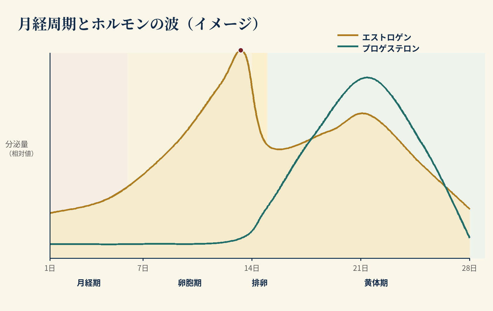

トップ › 美容整体の専門解説 › 女性ホルモンと年代別の変化
HORMONES & LIFE STAGES
女性ホルモンと年代別の変化
女性の体は、月単位の波と、年代ごとの大きな変化の中で揺れながら調子を保っています。エストロゲンを中心に、ホルモンの仕組みと年代別の体のケアの考え方を解説します。
女性ホルモンの基本｜エストロゲンとプロゲステロン
女性ホルモンとして知られるエストロゲンとプロゲステロンは、卵巣から分泌され、月経周期や妊娠の準備に関わるだけでなく、骨、血管、肌、髪、自律神経の働きなど、全身のさまざまな調整に関わっています。エストロゲンは周期の前半に増え、体を活動的に整える方向に働き、プロゲステロンは後半に増え、体を休ませる準備や水分をためる方向に関わります。この二つの波の入れ替わりが、およそ月単位のリズムを作っています。そのため、同じ人でも時期によって、体の軽さ、むくみの感じ方、気分の波、肌の状態が変わることは自然なことです。大切なのは、変化そのものを異常と捉えるのではなく、自分のリズムのパターンを知ることです。図1のとおり、ホルモンの波は月単位の小さな波と、年代を通じた大きな流れの二重構造で捉えることができます。ホルモンの働きは、体だけでなく気分の安定とも関わっています。エストロゲンは、気持ちの調整に関わる脳内の物質の働きとも関係が深いとされ、分泌の波が気分の波として感じられることがあります。もちろん、気分の変化はホルモンだけで決まるものではなく、睡眠や人間関係、仕事の負担など多くの要素が重なります。大切なのは、体の波がある時期には自分に厳しくしすぎないことです。波の時期を知っているだけで、予定の詰め方や休み方を調整でき、結果として心身の負担を軽くできます。仕組みを知ることは、自分をいたわる根拠にもなります。

月単位の波｜周期による体の感覚の変化
月経周期の中では、ホルモンの波に伴って体の感覚も変化します。周期の前半は比較的体が軽く感じられる方がいる一方、後半は水分をためやすくなり、脚のむくみや体の重さを感じやすくなる方がいます。また、周期の節目では、肩や腰の張りの感じ方が変わったり、眠りの深さに変化を覚えたりすることもあります。これらは個人差が大きく、同じ方でも月によって違うのが普通です。新大阪で働く方の中には、出張や大きな仕事の時期と周期の後半が重なると、普段より疲れを強く感じるという方もいます。予定を詰め込む時期と、体を休ませたい時期の重なりを知っておくだけでも、暮らしの組み立て方は変わります。手帳やアプリで周期と体調を簡単に記録する習慣は、自分の波を知るための手軽な方法です。体の声を数値や言葉で残すことが、ケアの出発点になります。周期の記録を続けると、仕事の予定との付き合い方も変わります。たとえば大切な発表や出張が、体の重さを感じやすい時期と重なる場合、前後の日に余白を作る、移動の合間に休憩を挟む、といった調整が可能になります。反対に、体が軽く感じられる時期に、運動や外出の予定を入れる方もいます。周期は制限ではなく、予定を組むための情報です。新大阪を拠点に移動の多い暮らしを送る方ほど、この情報の価値は大きくなります。自分の波を把握することは、体調管理であると同時に、暮らしの設計でもあります。
20代・30代｜忙しさの中でリズムを保つ時期
20代から30代は、ホルモン分泌が比較的安定する時期といわれますが、仕事や暮らしの忙しさがリズムを乱す要因になりやすい年代でもあります。残業や夜更かしによる睡眠不足、食事の時間のばらつき、運動の機会の減少は、体のリズム全体に影響します。西中島や新大阪のオフィスでキャリアを積む時期は、御堂筋線の通勤とデスクワークで座る時間が長くなり、姿勢や巡りの面でも負担が重なりやすい時期です。この年代のケアで大切なのは、完璧な生活を目指すことではなく、睡眠、食事、運動のうち崩れやすいものを一つ決めて整えることです。たとえば就寝時間を30分早める、週に一度は歩く距離を増やす、といった小さな基準が土台になります。体の波を知り、無理のない範囲で予定を組む感覚は、この時期に身につけると後の年代にも役立ちます。この年代では、食事の内容がリズムに与える影響も見逃せません。忙しさから食事を抜いたり、夜遅い時間にまとめて食べたりする習慣は、血糖の波や睡眠の質にも関わります。三食を完璧にそろえる必要はありませんが、朝に何か口にする、たんぱく質を意識する、といった小さな基準が土台を支えます。また、カルシウムやビタミンDなど骨に関わる栄養は、後の年代の土台作りとしても意識したい要素です。運動については、通勤の歩行や階段など、暮らしの中で確保できる活動が現実的な選択肢になります。
40代・50代｜エストロゲンの変化と向き合う時期
40代後半から50代にかけては、エストロゲンの分泌が大きく揺れながら減っていく更年期と呼ばれる時期に入ります。この変化の過程では、ほてりや発汗、眠りの変化、気分の波、関節まわりのこわばり感など、さまざまな感覚を覚える方がいます。現れ方や時期には大きな個人差があり、同じ年代でも経験は一人ひとり異なります。エストロゲンは骨や血管の健康にも関わるため、この時期は体の土台を見直す節目でもあります。ただし、症状の診断や治療は医療の領域です。日常生活に支障がある場合は、婦人科など医療機関への相談が大切であり、当サロンの施術がそれに代わるものではありません。そのうえで、姿勢や筋肉、巡りといった体の土台を日常のケアで整えることは、この時期の暮らしを支える一つの要素になります。変化を恐れるのではなく、仕組みを知って備える姿勢が助けになります。更年期の時期には、仕事や家庭での役割の変化も重なりやすく、心身の負担が複合的になることがあります。親の介護や子どもの進路など、年代特有の出来事が続く時期でもあります。体の変化だけを見るのではなく、暮らし全体の負担と合わせて捉えることが、この時期のケアでは特に大切です。周囲に相談しにくいと感じる方もいますが、同じ年代の経験を共有できる場や、専門家への相談窓口は増えています。一人で抱え込まず、情報を集めて選ぶことが、変化の時期を穏やかに過ごすための力になります。
年代を問わない土台のケア｜姿勢・巡り・睡眠
ホルモンの波は自分で直接コントロールできるものではありませんが、その波を受ける体の土台は、日常のケアで整えることができます。第一に姿勢です。骨盤と背骨のバランスが整っていると、呼吸が深くなり、体の緊張が抜けやすくなります。第二に巡りです。歩くことや入浴で体を温めることは、むくみやすい時期の重さを和らげる工夫として、年代を問わず取り入れられます。第三に睡眠です。就寝前の画面時間を区切り、起床後に光を浴びる習慣は、リズムの土台になります。旅行や出張が多い方は、移動先でも就寝と起床の時間を大きくずらさない意識が役立ちます。ステラカストル新大阪の施術は90分10,000円で、姿勢と巡りの両面から体を整える時間としてご利用いただけます。ホルモンに関わる病気の治療や、妊娠に関わる効果をお約束するものではありません。土台のケアは、年代ごとに優先順位を変えながら続けるものです。20代・30代では睡眠と活動量の確保が中心になりやすく、40代以降では骨や筋肉を意識した動きや、定期的な体の確認が大切になります。共通しているのは、姿勢、巡り、睡眠という三つの土台が、どの年代でも体の調子を支えている点です。ステラカストル新大阪では、年代や暮らしの状況を伺いながら、その方に合った施術の配分をご提案しています。土台を整える時間は、忙しい日々の中で自分の体と向き合う機会にもなります。
自分の波と付き合うために｜記録と相談のすすめ
年代別の変化と長く付き合うために役立つのが、記録と相談です。記録は、周期、睡眠、体の重さや張りの感覚、気分の波を簡単に書き留めるだけでも構いません。数か月分がたまると、自分なりのパターンが見えてきて、予定の組み方や休み方の判断材料になります。新幹線での移動や繁忙期など、負担が重なる時期を先に把握できれば、ケアの予定も立てやすくなります。相談については、体の変化で気になることがあれば、まず医療機関や専門家に相談する道を知っておくことが安心につながります。当サロンでは、施術の範囲でできることとできないことを丁寧にお伝えし、日常のケアの相談に応じています。女性の体は、波があるからこそ、その波に合わせた暮らし方を選べます。仕組みを知り、自分のリズムを尊重することが、年代を重ねるうえでの体のケアの基本です。記録と相談を続けるうえで、変化を比べる相手は過去の自分です。同年代の誰かと比べる必要はありません。先月より眠りが深くなった、移動の後の回復が早くなった、といった自分の変化に目を向けることが、ケアを続ける力になります。また、記録は医療機関を受診する際にも役立つ資料になります。いつ頃から、どのような変化があるのかを具体的に伝えられるからです。体の波と付き合う知恵は、記録と相談の積み重ねの中で育ちます。焦らず、自分のペースで整えていきましょう。
関連する症状・お悩み
よくあるご質問
更年期の症状は施術で改善しますか？
施術は医療行為ではなく、更年期の症状の診断や治療は行いません。生活に支障がある場合は婦人科など医療機関へご相談ください。施術は日常のケアとしてご利用いただけます。
周期の中で施術に向く時期はありますか？
時期による制限はありません。むくみや重さを感じやすい時期にご利用いただく方もいます。体調に合わせて無理のない日をお選びください。
ホルモンバランスを整えるとはどういう意味ですか？
当サロンではホルモンそのものへ働きかける施術は行いません。姿勢や巡り、休息の時間といった体の土台を整えるケアを指してご案内しています。
体の変化が心配なときはどうすればよいですか？
気になる変化が続く場合は、まず医療機関へ相談することをおすすめします。そのうえで日常のケアとして施術を組み合わせることができます。
専門解説シリーズ
施術者について
平賀 伸人（ひらが のぶひと／男性セラピスト）｜施術歴30年。鍼灸師（国家資格）・登録販売者・アロマセラピスト・パーソナルトレーナーの資格を持ち、オイルマッサージと美容整体を、その日の状態とご希望に合わせて組み合わせて施術します。このページの内容は、施術者の知識と経験をもとに作成しています。
料金・店舗情報
オイルマッサージ＋美容整体 90分 10,000円（税込）｜コースは1つだけです。有料の追加オプションの販売はありません。お支払いは現金のみです。
住所：大阪市淀川区西中島7-2-13（新大阪駅・大阪メトロ御堂筋線 南口から徒歩3分）｜営業時間：月〜土 17:00〜22:00・日曜休み｜女性専用・完全予約制｜当サロンでは鍼灸施術は行いません。
ご予約・お問い合わせ
ご予約はLINE公式アカウントで受け付けています。ご希望の日時をお送りください。変更・キャンセルはLINEでご連絡ください。キャンセル料はいただきません。